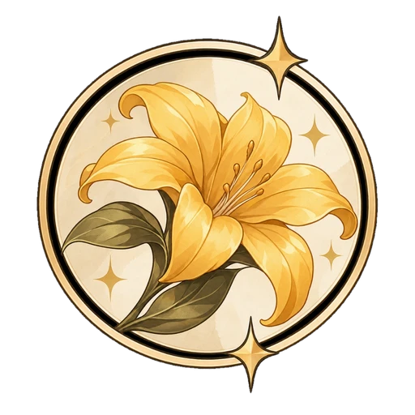
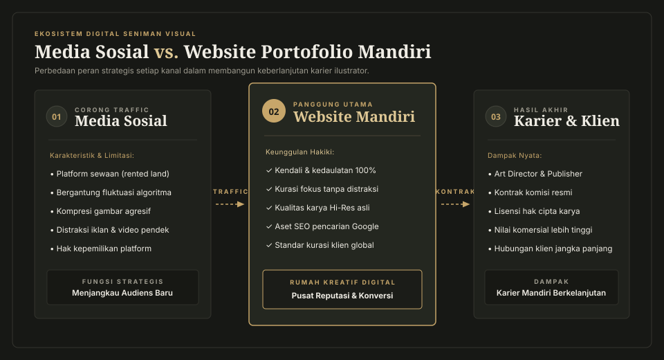

World & Environment
Membangun tempat yang terasa memiliki sejarah.
Saya Fian, ilustrator independen yang mengeksplorasi karakter, dunia, dan narasi visual. Menciptakan gambar yang bukan hanya dilihat, tetapi juga meninggalkan kesan.
01 — 03
VISUAL EXPLORATIONS

2026FIG. 01 — THE ART OF ATMOSPHERE
BEYOND THE SURFACE
Saya percaya visual yang kuat tidak selalu harus ramai. Melalui suasana, detail, dan komposisi, saya ingin menyampaikan gagasan yang terkadang sulit dijelaskan dengan kata-kata.
Eksplorasi visual yang berangkat dari cerita, atmosfer, dan rasa ingin tahu.
Membangun tempat yang terasa memiliki sejarah.
Karakter dengan bentuk dan cerita yang khas.
Momen kecil yang menyimpan makna besar.
Visual di atas merupakan ilustrasi dekoratif sementara.
THOUGHTFULLY MADE
Kolaborasi kreatif yang berangkat dari konsep dan dikembangkan dengan perhatian pada detail.
PERSPEKTIF & CATATAN ATELIER

Tinjauan kritis mengenai ilusi kepemilikan di media sosial, kedaulatan seniman visual, dan peran website portofolio mandiri sebagai pembeda di hadapan klien internasional.
THE NEXT CHAPTER STARTS HERE
Punya gagasan, proyek, atau kemungkinan kolaborasi? Mari mulai dengan percakapan.
Hubungi saya ↗